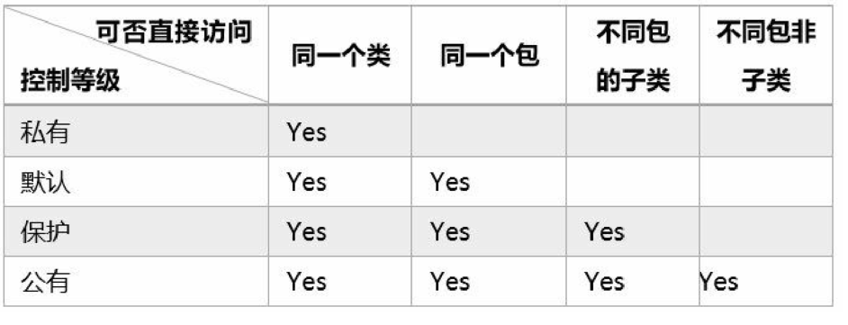

8.6. 封装性与访问控制¶
访问控制分为4个等级：
- 私有
- 默认
- 保护
- 公有
Java类成员的访问控制

8.6.1. 私有级别¶
PrivateClass.java
# 定义了一个私有类，声明了构造方法，和一个printX方法
package PrivaterClass_test;
public class PrivateClass {
private int x;
public PrivateClass() {
x = 100;
}
private void printX() {
System.out.println("Value Of is " + x);
}
}
HelloWord.java
package PrivaterClass_test;
public class HelloWorld {
public static void main(String[] args) {
PrivateClass p;
p = new PrivateClass();
// 编译错误，PrivateClass中的方法 printX()不可见
p.printX()
}
}
执行HelloWord会报错，因为PrivateClass中printX()的方法是私有方法
8.6.2. 默认级别¶
- 在同一个包内，默认级别的使用
DefaultClass.java
package DefaultClass_test;
public class DefaultClass {
int x;
public DefaultClass() {
// 构造方法
x = 100;
}
void printX() {
System.out.println("Value Of is " + x);
}
}
HelloWorld.java
package DefaultClass_test;
public class HelloWorld {
public static void main(String[] args) {
DefaultClass p;
p = new DefaultClass();
p.printX();
}
}
编译通过
Value Of is 100
- 在不同的包中，默认级别的使用
import DefaultClass_test.DefaultClass;
public class Defalut_class_test {
public static void main(String[] args) {
// TODO 自动生成的方法存根
DefaultClass p;
p = new DefaultClass();
// 编译错误，DefaultClass中的方法，printX()不可见
p.printX();
}
}
该HelloWorld.java文件与DefaultClass类不在同一个包中，printX()是默认访问级别，所以p.printX()方法无法编译通过
8.6.3. 公有级别¶
- 同一个包内
PublicClass.java
package PublicClass_test;
public class PublicClass {
//公有级别变量
public int x;
public PublicClass() {
x = 100;
}
public void printX() {
// 公有级别方法
System.out.println("Value Of is " + x);
}
}
HelloWorld.java
package PublicClass_test;
public class HelloWorld {
public static void main(String[] args) {
PublicClass p;
p = new PublicClass();
p.printX();
}
}
打印输出正常
- 不同的包内
package DefaultClass_test;
import PublicClass_test.PublicClass;
public class HelloWorld {
public static void main(String[] args) {
PublicClass p;
p = new PublicClass();
p.printX();
System.out.println(p.x);
}
}
打印输出正常
Value Of is 100
100
在不同的包内和在同一个包内，都能正常调用类中的方法和变量
8.6.4. 保护级别¶
保护级别的关键字是protected，保护级别在同一包中完全与默认访问级别一样，但是不同包中子类能 够继承父类中的protected变量和方法，这就是所谓的保护级别，“保护”就是保护某个类的子类都能继承该类的变量和方法。
8.6.5. 总结：¶
访问成员有两种方式：一种是调用，即通过类或对象调用它的成员，如p.printX()语句；
另一种是继承，即子类继承父类的成员变量和方法。
访问级别顺序
是：私有级别→默认级别→保护级别→公有级别
1.公有访问级别任何情况下两种方式都可以；
2.默认访问级别在同一包中两种访问方式都可以，不能在包之外访问；
3.保护访问级别在同一包中与默认访问级别一样，两种访问方式都可以。但是在不同包之外只能继承访问；
4.私有访问级别只能在本类中通过调用方法访问，不能继承访问。